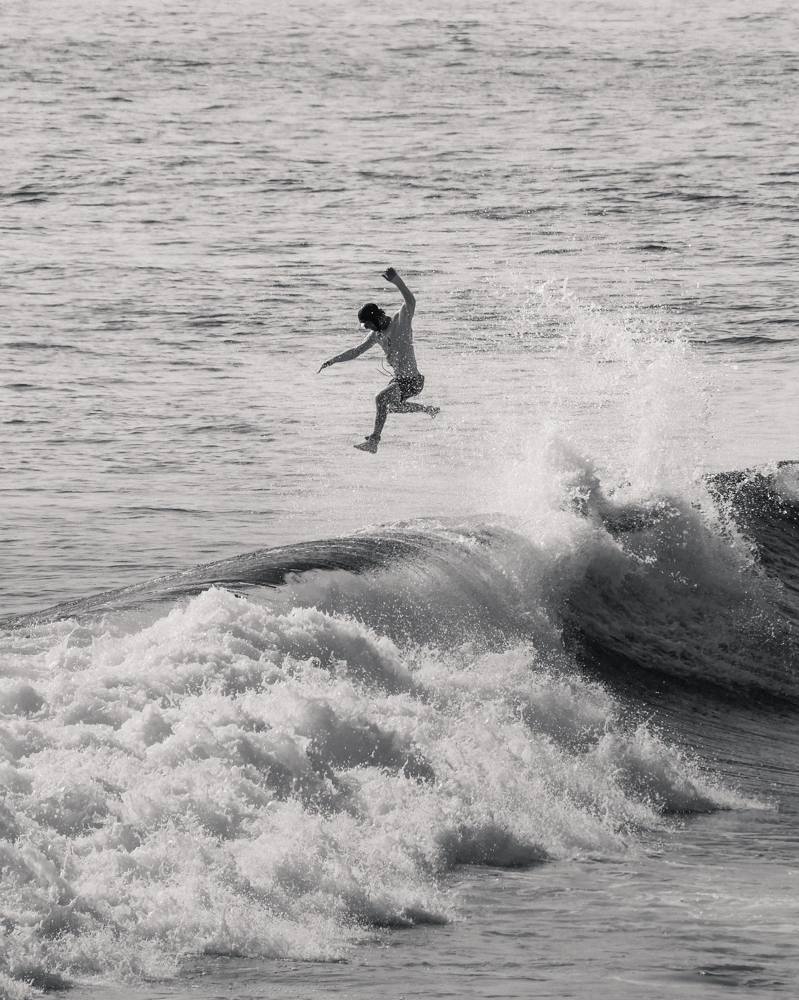

Hi, I'm Oliver. Welcome to my photography page!
I love travelling and especially surfing. I have been fortunate enough to travel to many amazing places thanks to my hobby. I usually have a camera in my hand and want to share some of my work with you. Find some of my favourite shots below.
Support South African shreddersHOSSEGOR
This picture was taken during sunset in a small town called Hossegor, we waited for the street to be almost car free to take the picture.
CENINGAN POINT
This picture is from Nusa Ceningan at a really cool surf spot called Ceningan Point. You can watch the waves and the surfers from a cliff.
LA GRAVIÈRE
This picture was taken at La Gravière, one lonely surfer was waiting for a last wave.
KELINGKING
This picture was taken in Nusa Penida, Indonesia. You can see the famous Kelingking beach almost empty.
BIARRITZ

This picture was taken in a skate park near Biarritz, you can see Gino do a nose manual.
EPALINGES

This picture is from the forest in Epalinges, you can see David on his surfskate.